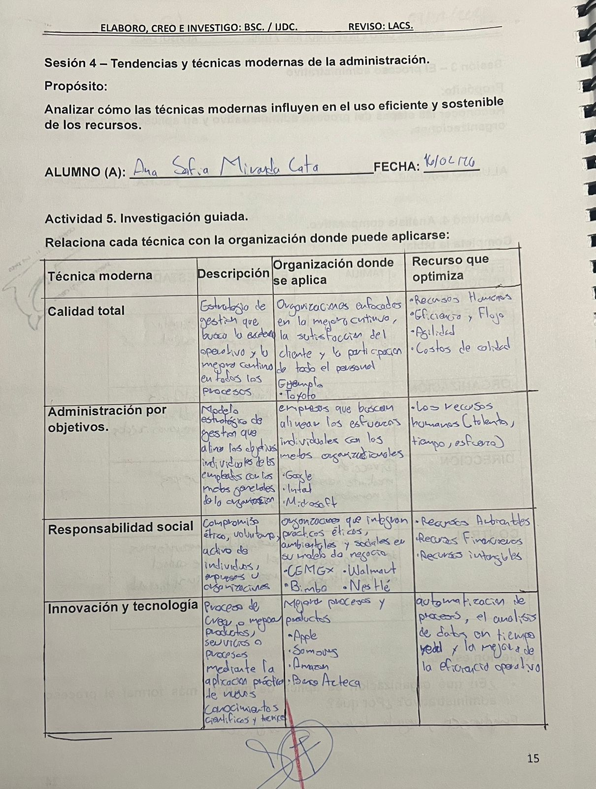
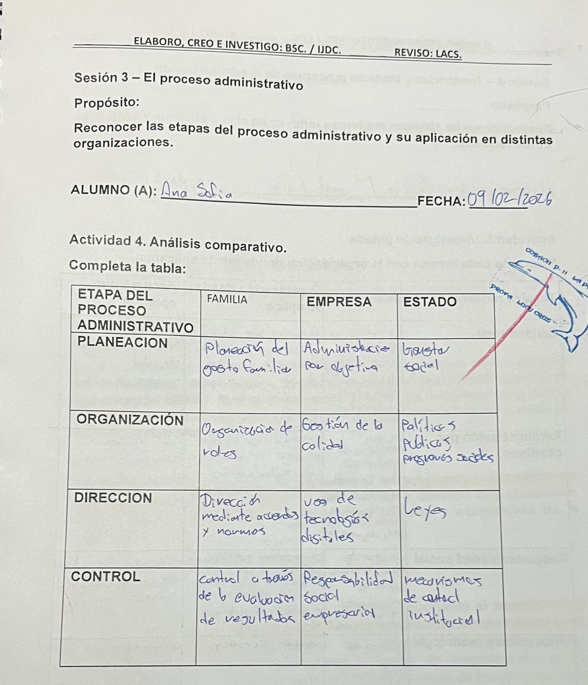
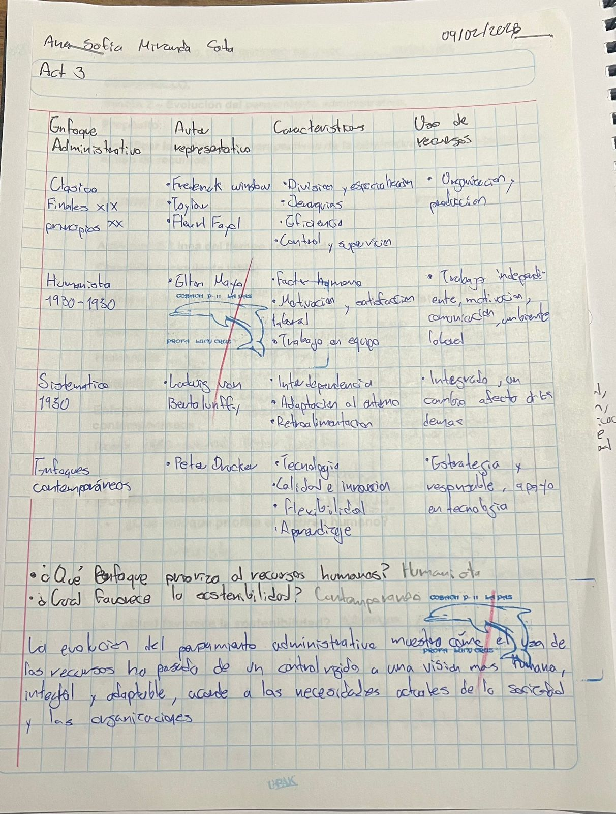
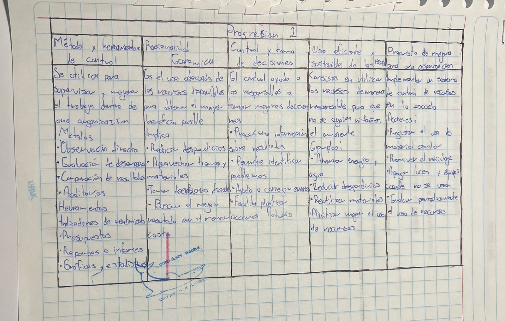

En la materia de Fundamentos de la Administracion se ve acerca del proceso administrativo y como se adapta e influye en las organizaciones que son Familia, Empresa y Estado ademas de mostrarnos como estan conectados; Si las Familias no consumen, las empresas no produces; Si las Empresas no contratan, las familias no tienen ingresos; Si el Estado no regula o no provee infraestructura, los otros agentes no pueden operar eficientemente. Uno no funciona sin el otro.
✱Una organizacion es un grupo de personas que trabajan juntas con reglas y tareas para lograr un objetivo en comun y un beneficio social, usando de una manera eficiente los recursos disponibles.
Se habla de los enfoques administrativos, sus autores, las caracteristicas y como utilizaban los recursos.
Acerca de la responsabilidad social de como se desarrolla en cada tipo de organizaciones y de, los recusos involucrados:



